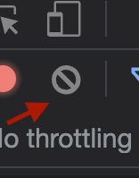
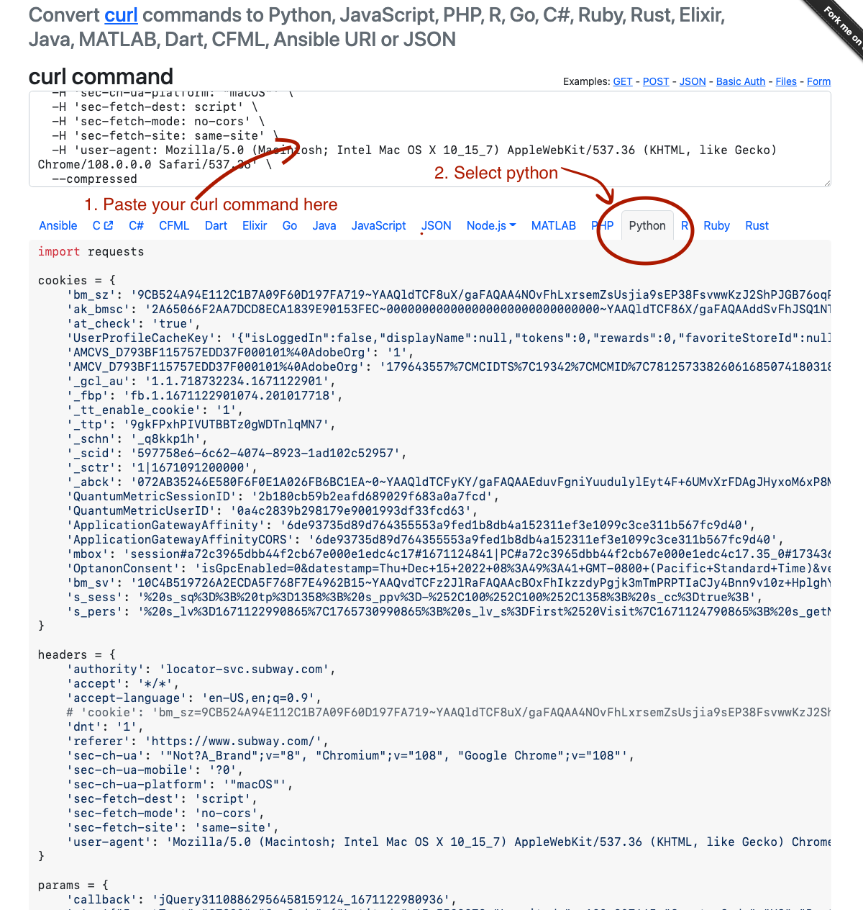

Browser requests to python code with a few clicks
An amazing hack for turning web requests in your browser into reusable python code with a few clicks.
I learned this from Zachary Blackwood’s 2022 NormConf Talk.
Example: Get A List of Subway Restaurants With Python
- Go to https://www.subway.com/en-US/locator in Google Chrome

Open developer tools using
Option + CMD + IGo the the network tab, and hit the clear button

- Type in a zipcode and search. Look for a network request that seems like it is getting data, in this case
GetLocations.ashx...looks super promising.

- Right click on that particular event and select
Copy -> Copy as Curl

- Go to curlconverter.com and paste the curl command there.

Enjoy your python code that uses this otherwise undocumented API :)
Bonus: Parse The Response
You can parse the response data in a hacky way.
# run the code from curlconverter.com, which will give you a `response` object.
>>> import json
... response_string = response.text
... json_string = response_string[response_string.index("(") +1:response_string.index('"AdditionalData":')-1]+'}'
... parsed_string = json.loads(json_string)
... stores = parsed_string['ResultData']
>>> stores
[{'LocationId': {'StoreNumber': 21809, 'SatelliteNumber': 0},
'Address': {'Address1': '4888 NW Bethany Blvd',
'Address2': 'Suite K-1',
'Address3': 'Bethany Village Centre',
'City': 'Portland',
'StateProvCode': 'OR',
'PostalCode': '97229',
'CountryCode': 'US',
'CountryCode3': 'USA'},
'Geo': {'Latitude': 45.5548,
'Longitude': -122.8358,
'TimeZoneId': 'America/Los_Angeles',
'CurrentUtcOffset': 0},
'ListingNumber': 1,
'OrderingUrl': 'http://order.subway.com/Stores/Redirect.aspx?s=21809&sa=0&f=r&scc=US&spc=OR',
'CateringUrl': 'https://www.ezcater.com/catering/pvt/subway-portland-nw-bethany-blvd',
'ExtendedProperties': None},
...When to use this approach
This is great for adhoc things, but you probably want to use a headless browser and actually scrape the HTML if you want to do this in a repeatable way. But many times you want to do a one-off scrape, this isn’t so bad!